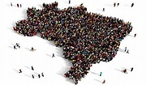
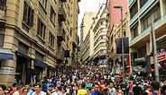

População brasileira em 2026
Gigante pela propria natureza.
Em 2026,a população brasileira continua crescendo, mas em um ritmo desacelerado, atingindo aproximadamente 213,4 milhões de habitantes, segundo estimativas do IBGE.
Crescimento da população brasileira

Esse crescimento mais lento está relacionado à queda na taxa de natalidade e ao aumento da expectativa de vida. O Brasil passa por uma transição demográfica importante, com mudanças na estrutura etária da população. Panorama Demográfico do Brasil (2026) População total: 213,4 milhões de pessoas Participação mundial: 2,57% da população global Densidade demográfica: 26 habitantes por km² Urbanização: 91,7% da população vive em áreas urbanas Idade mediana: 35,3 anos Taxa de fertilidade: 1,59 filhos por mulher Distribuição Regional Sudeste: Mais de 40% da população brasileira. É a região mais populosa, impulsionada por oportunidades econômicas e urbanização acelerada. Nordeste: Apresenta estabilização populacional, com políticas de desenvolvimento regional reduzindo a migração. Sul: Crescimento controlado, com destaque para qualidade de vida e bons indicadores de saúde e educação. Centro-Oeste: Expansão ligada ao agronegócio e à industrialização, mas enfrenta desafios ambientais. Norte: Crescimento relevante, mas com forte impacto ambiental, especialmente na Amazônia.

Especialistas apotam que esse cenária traz desafios e oportunidades, como a necessecidade de políticas públicas voltadas ao envelhecimento da população e ao desenvolvimento econômico sustentável.